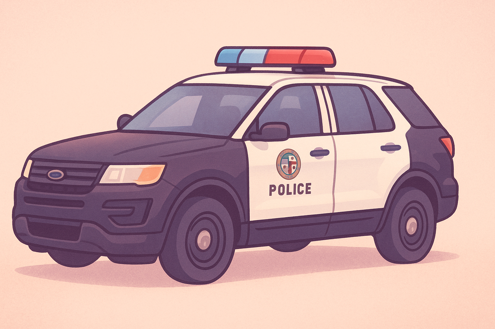

╔════≫──────๑ Kompendium Wiedzy LSPD ๑──────≪════╗
║───────────────────────────────────────────────────────────────────────────────────────────────────║╭━━━ Jednostka Off-Road ━━━╮
➔ Jednostka patrolowa ADAM OFF-ROAD
Jednostka „Adam Off-Road” to specjalna jednostka patrolowa LSPD, głównie przeznaczona do treningów i działań w terenie off-road.
Jej podstawowym pojazdem jest Ford Explorer.
Jednostka reaguje na zgłoszenia obywateli w trudnym terenie, wspiera inne patrole, prowadzi działania prewencyjne i zabezpiecza miejsca zdarzeń w trudnych warunkach.
Stanowi wsparcie dla głównych patroli i zapewnia skuteczną obecność policji w każdym rejonie miasta.
